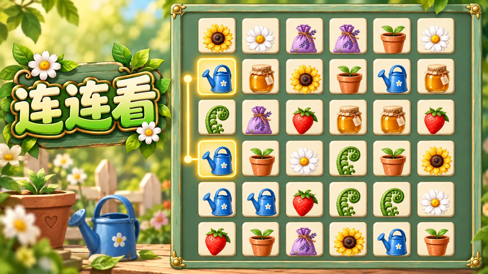 连连看 GARDEN LINKNO.01 花园连连看24 关手机 / 电脑 从两张相同的花牌开始，找出最多两次转弯的连线。观察左收拢方向，安排下一步消除。 点击 / 触屏选择两张花牌 消除开始游戏↗
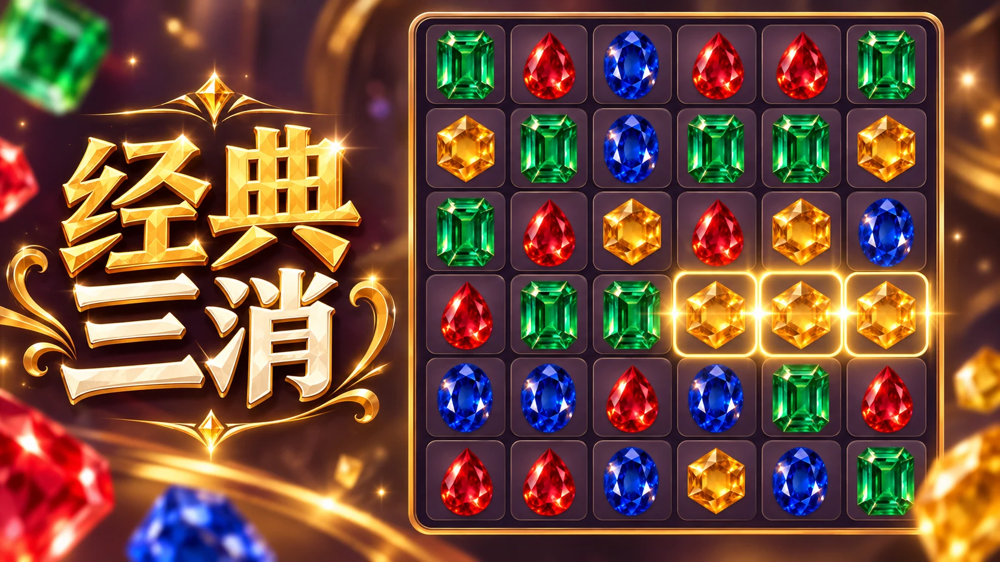 经典三消 PRISM ATELIERNO.02 宝石工坊24 关手机 / 电脑 交换相邻宝石，连成三颗消除地毯。让四连光束留在合适的位置，完成每关目标。 点击相邻宝石交换位置 消除开始游戏↗
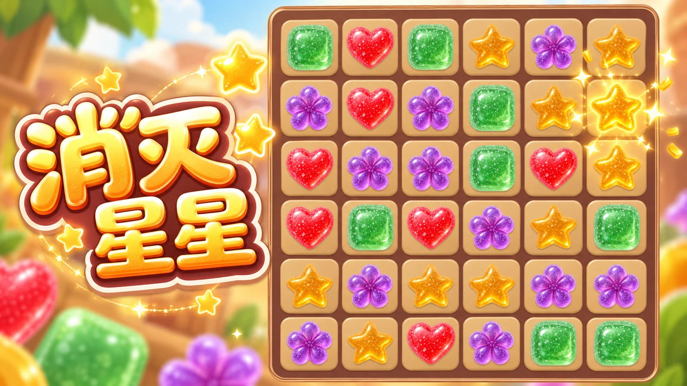 消灭星星 JELLY POPNO.03 果冻消星星24 关手机 / 电脑 点击成片的同色果冻，让它们一起消失。看准下落和左移顺序，在有限步数内清空棋盘。 点击 / 触屏消除相邻同色果冻 消除开始游戏↗
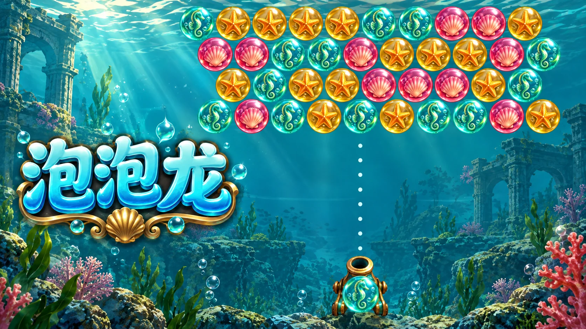 泡泡龙 DEEP SEA BUBBLESNO.04 深海泡泡龙24 关手机 / 电脑 瞄准并发射泡泡，连接三个同色，借助反弹让悬空泡泡一起落下。留意不断下压的海潮。 点击发射 · ← → 瞄准 · 空格发射 消除开始游戏↗
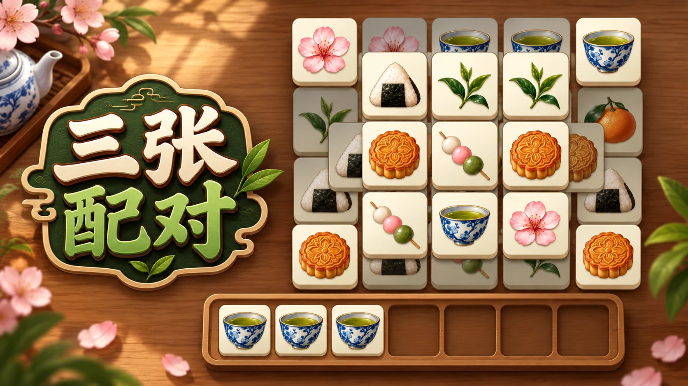 三张配对 TEA HOUSE TRIPLESNO.05 茶山三张24 关手机 / 电脑 从层叠茶点中找出三张相同图案。茶盘只有七个位置，先观察遮挡，再决定收牌顺序。 点击 / 触屏收牌 · 三张相同消除 消除开始游戏↗
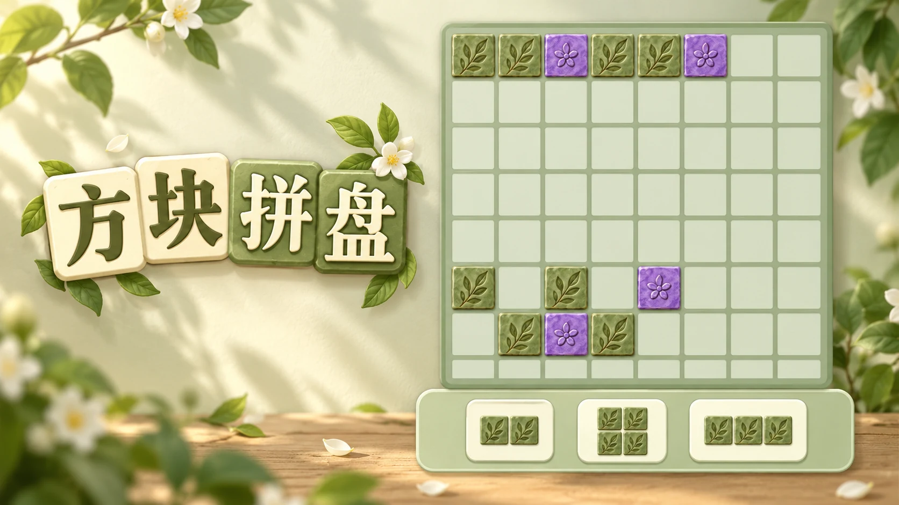 方块拼盘 GRID GARDENNO.07 格间花园24 关手机 / 电脑 把不同形状的拼块放进花圃，填满行或列。根据固定补给顺序，留好下一块的位置。 拖动拼块 · 或点选后放入棋盘 空间开始游戏↗
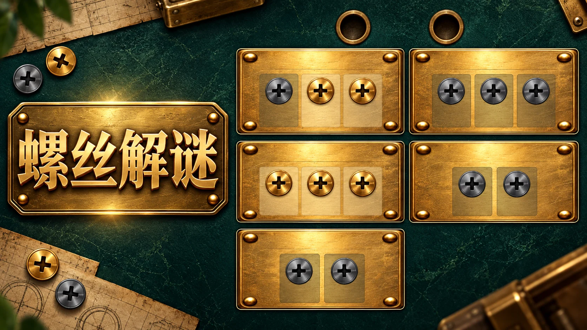 螺丝解谜 BRASS WORKSHOPNO.08 黄铜拆解室24 关手机 / 电脑 按先后依赖拆下螺丝，腾出挡板与孔位。整块板拆完后回收空孔，解开连杆机关。 点击可拆螺丝 · 管理空孔 空间开始游戏↗
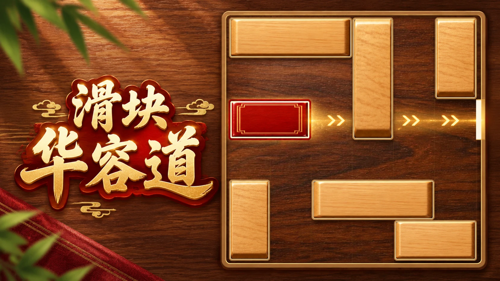 滑块华容道 REDWOOD ESCAPENO.09 红木出逃24 关手机 / 电脑 横块横移，竖块竖移。挪开挡路的木条，为红色目标块找到通向右侧出口的路。 拖动木条 · 或点选后按方向键 空间开始游戏↗
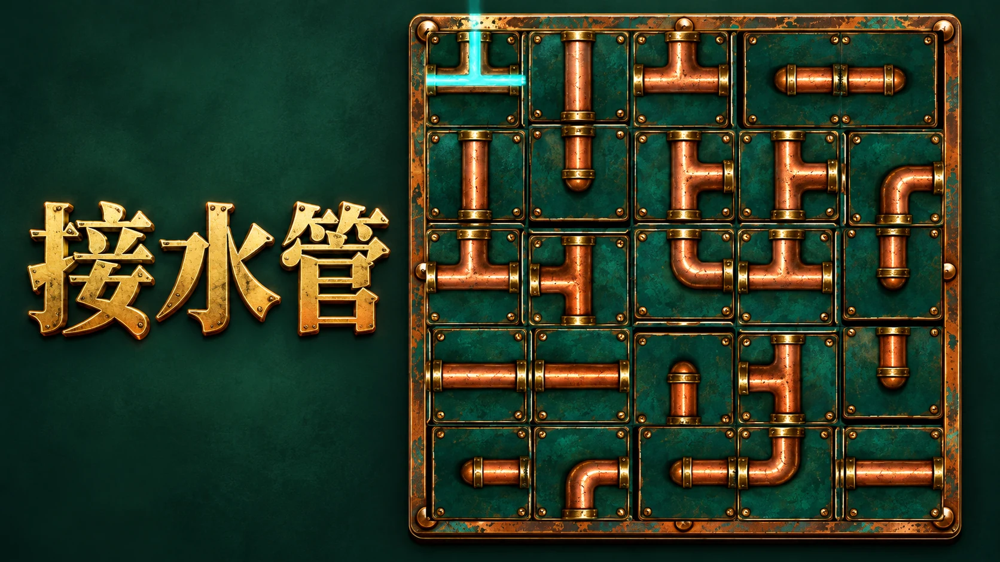 接水管 RAINWATER CIRCUITNO.10 雨水回路24 关手机 / 电脑 旋转每段管道，把进水口接到出水口。让所有接头正确相连，点亮完整的雨水回路。 点击 / 触屏旋转管道 90° 空间开始游戏↗
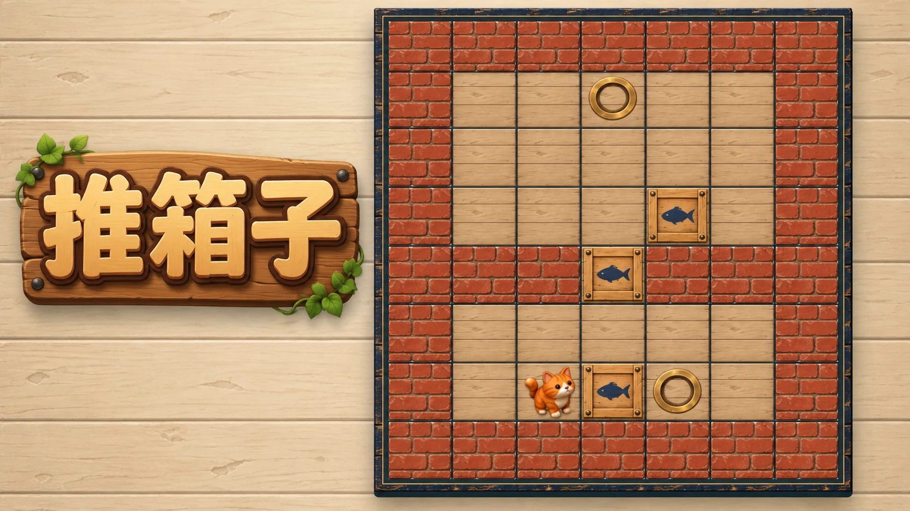 推箱子 CAT WAREHOUSENO.11 猫咪搬仓24 关手机 / 电脑 带着猫咪整理仓库，把箱子推到圆形标记上。箱子只能推不能拉，每一步都要留好退路。 方向键 / 方向按钮 · 滑动或点邻格 空间开始游戏↗
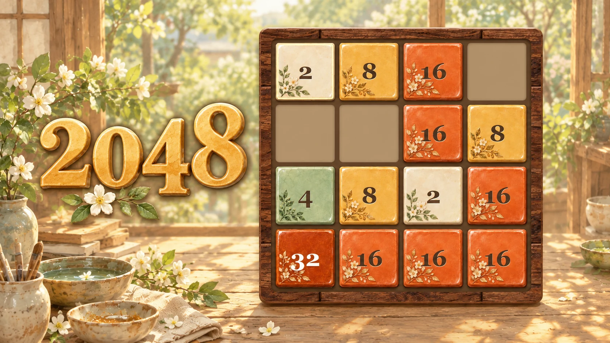 2048 AMBER ATELIERNO.12 琥珀工坊24 关手机 / 电脑 滑动棋盘合并相同数字，把大数送到目标位置。闯关使用固定补牌，也可以挑战经典无尽。 方向键 · 滑动棋盘 · 方向按钮 合成开始游戏↗
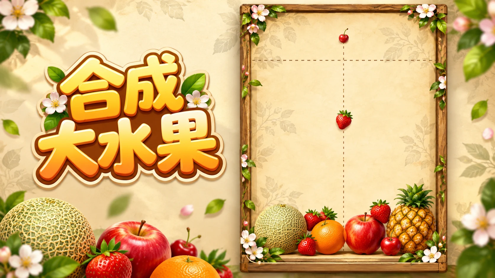 合成大水果 ORCHARD CLUBNO.13 果园营业中24 关手机 / 电脑 瞄准位置落下水果，让相同水果相遇升级。安排果堆与补给顺序，触发连锁合成。 鼠标 / 手指拖动瞄准，松开落果 合成开始游戏↗
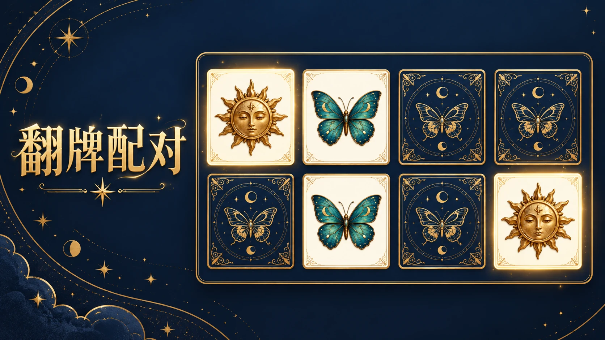 翻牌配对 LUNAR OBSERVATORYNO.14 月夜翻牌24 关手机 / 电脑 翻开星图，记住图案的位置。找出每一对相同卡牌，从小棋盘逐步挑战空间记忆。 点击 / 触屏翻开两张卡牌 益智开始游戏↗
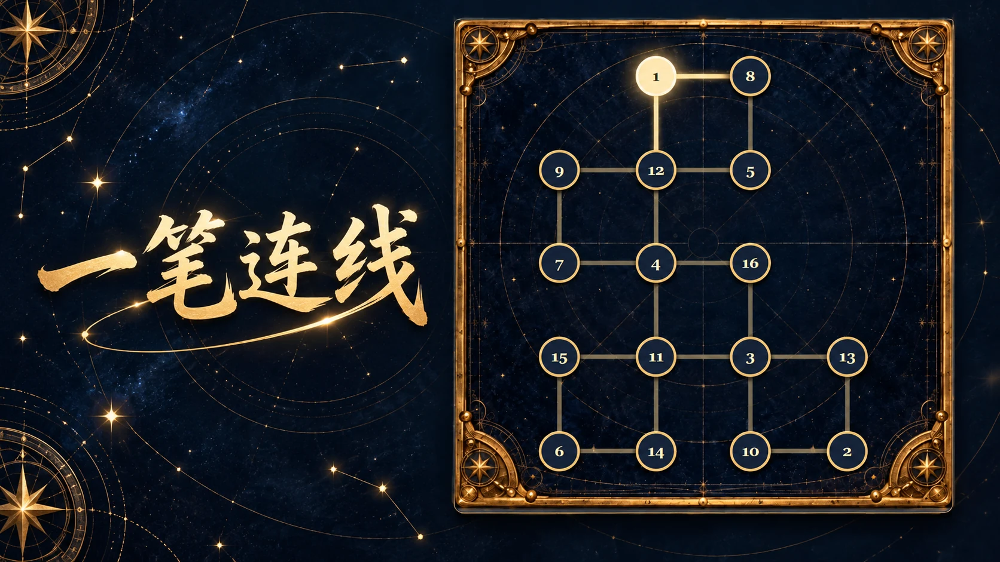 一笔连线 CONSTELLATION LABNO.15 一笔连线24 关手机 / 电脑 沿着星点一笔走遍所有连线。每条线只经过一次，先看清路口，再规划完整路线。 点击相邻星点 · 或按住连续划过 益智开始游戏↗
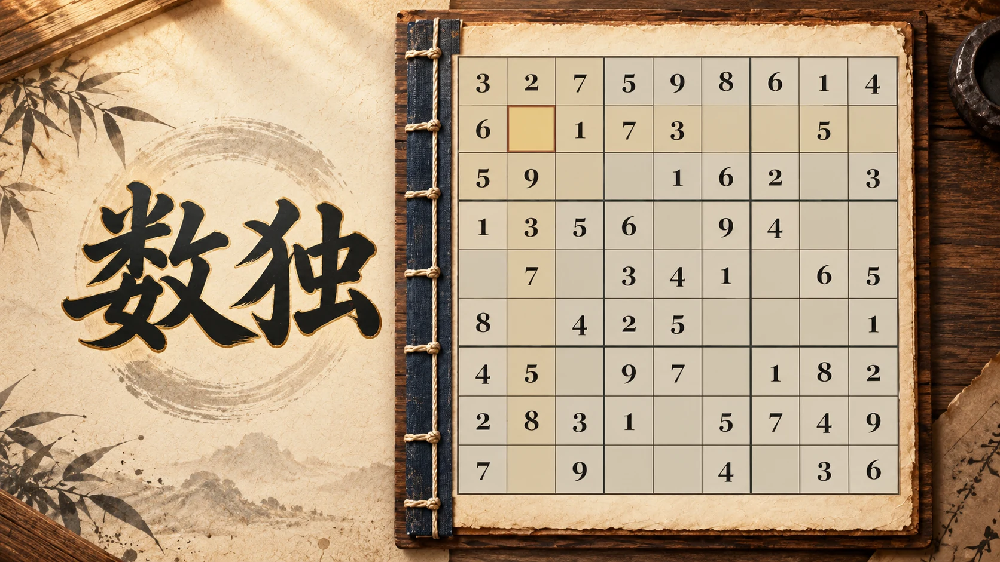 数独 PAPER AND INKNO.16 数独24 关手机 / 电脑 在行、列与九宫格中填入不重复的数字。从唯一候选开始，逐步练习更细致的逻辑推理。 点选格子填数 · 1–9 输入 · N 笔记 益智开始游戏↗
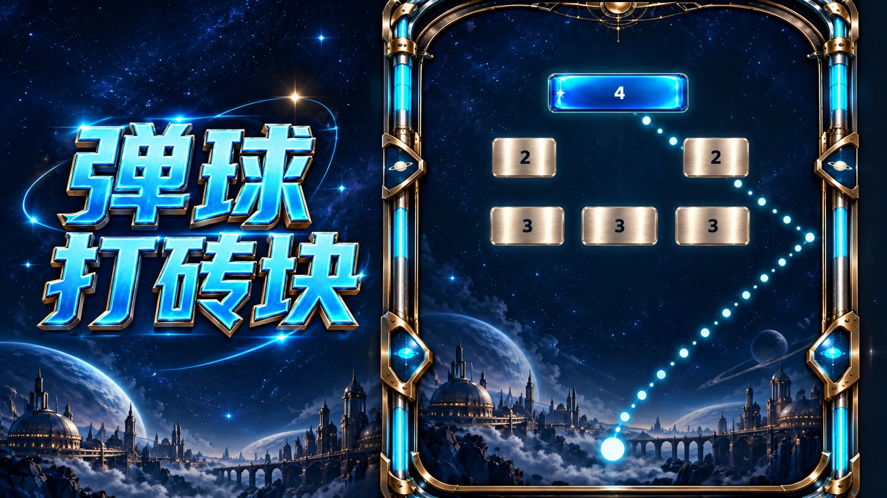 弹球打砖块 NEON CIRCUITNO.17 霓虹弹球24 关手机 / 电脑 调整发射角度，让弹球在砖阵之间连续反弹。观察砖块耐久和回收落点，击穿目标砖。 拖动瞄准松手发射 · ← → / 空格 街机开始游戏↗
节奏叠塔 DUSK ARCHITECTSNO.18 节奏叠塔24 关手机 / 电脑 看准移动方块与塔身重叠的瞬间落下。只留下对齐的部分，把黄昏中的小塔叠得更高。 点击 / 触屏落下 · 空格落下 街机开始游戏↗